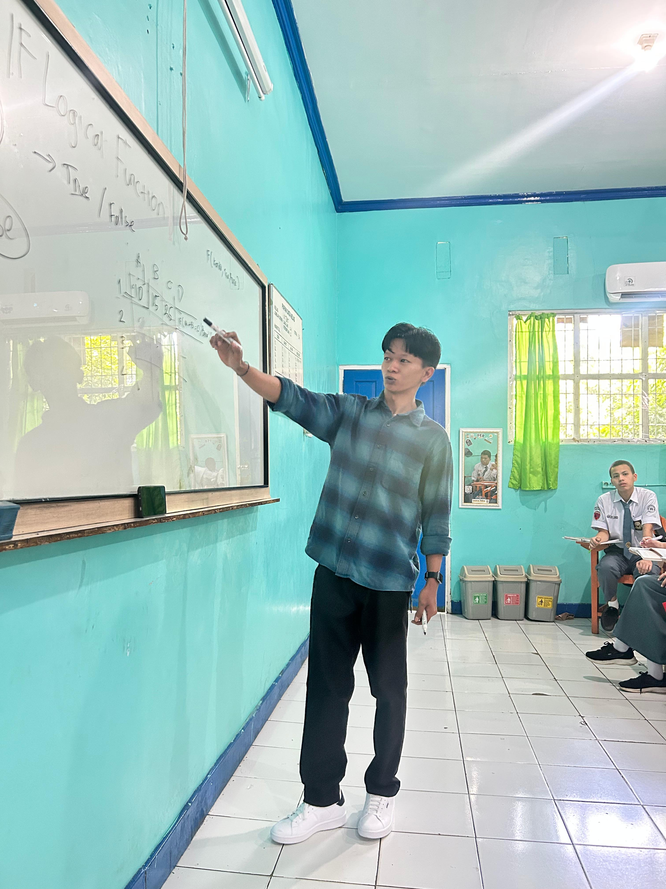
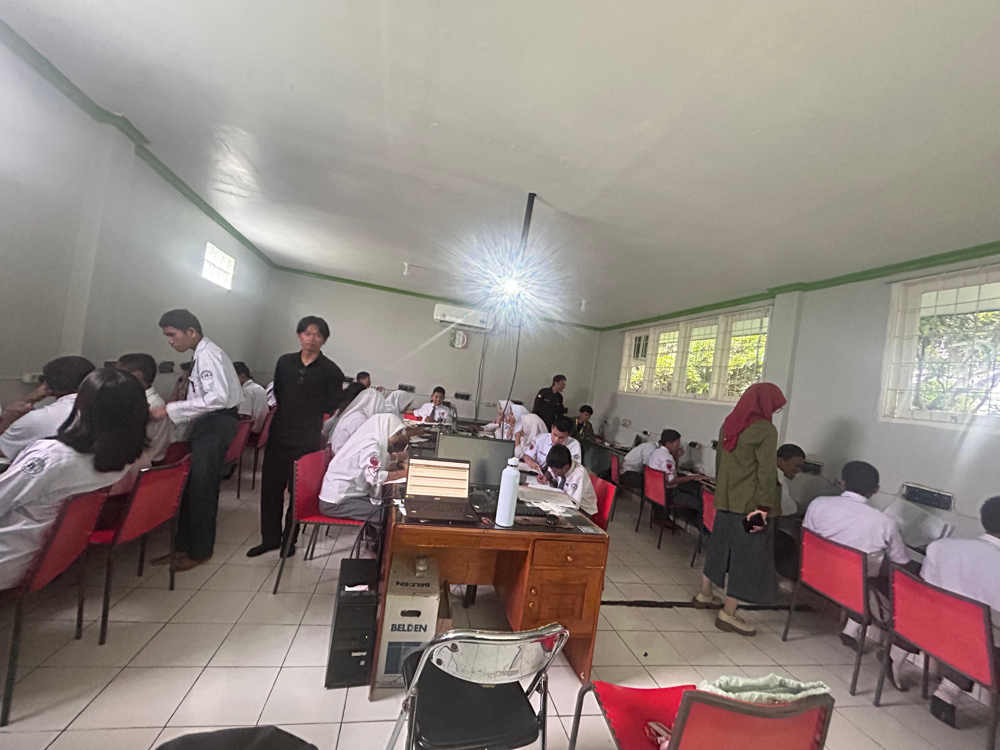
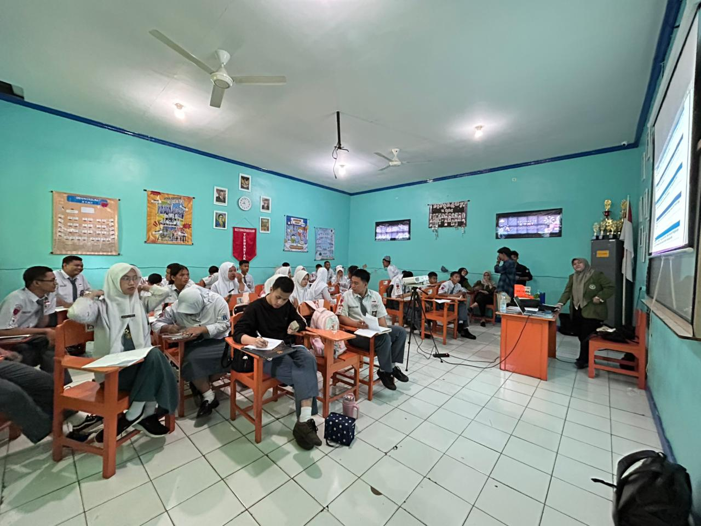
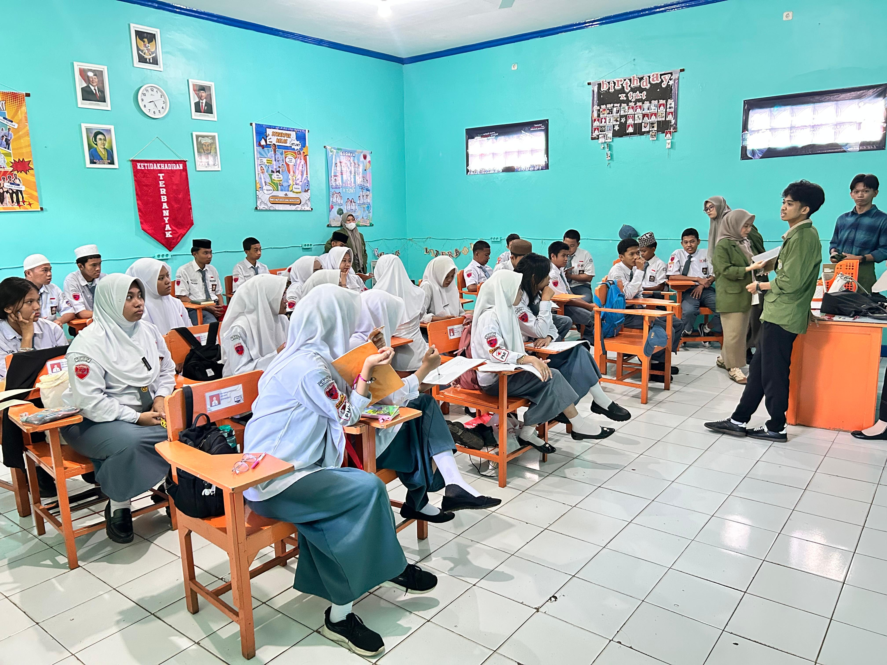
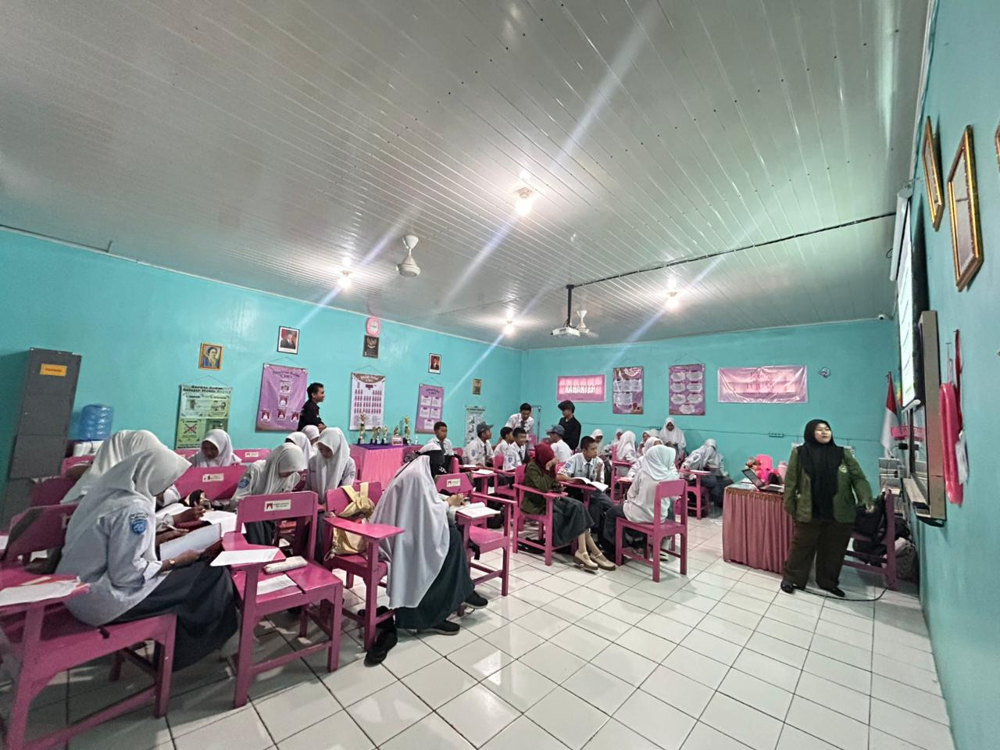

Analisis Artefak Pembelajaran
Berikut adalah analisis mendalam terhadap produk pembelajaran (RPP, media, hasil kerja siswa, dan video praktik) yang disusun selama 3 siklus PPL Terbimbing. Setiap artefak dianalisis berdasarkan konteks, tujuan, kelebihan, kekurangan, serta dikaitkan dengan kajian teori dari mata kuliah terintegrasi.
Siklus 1 — Eksplorasi Konsep Dasar
RPP & MediaKonteks: Pembelajaran pada siklus 1 berfokus pada pengenalan konsep dasar logika pemrograman menggunakan pendekatan saintifik. Siswa diajak mengenal algoritma sederhana melalui aktivitas unplugged dan simulasi interaktif.
Tujuan: Siswa mampu memahami konsep dasar algoritma dan menerapkannya dalam kehidupan sehari-hari melalui contoh-contoh kontekstual.
✅ Kelebihan
Pendekatan saintifik membantu siswa membangun pengetahuan secara bertahap. Aktivitas unplugged memudahkan siswa memahami konsep tanpa tekanan teknologi.
⚠️ Kekurangan
Beberapa siswa kesulitan menghubungkan aktivitas unplugged dengan implementasi nyata di komputer. Waktu yang tersedia kurang optimal untuk eksplorasi mendalam.
📚 Kajian Teori
Growth Mindset (Carol Dweck): Saya menerapkan
prinsip bahwa kemampuan dapat berkembang melalui usaha dan
latihan. Siswa didorong untuk melihat kesalahan sebagai bagian
dari proses belajar, bukan sebagai kegagalan.
Pendidikan Mendalam (Deep Learning): Pendekatan
ini mendorong siswa untuk memahami konsep secara mendalam
melalui pengalaman langsung (learning by doing), bukan sekadar
menghafal.
Asesmen Formatif: Saya menggunakan observasi
dan pertanyaan pemantik untuk menilai pemahaman siswa secara
real-time, sehingga dapat memberikan umpan balik segera.
📸 Dokumentasi Mengajar


Siklus 2 — Penguatan & Kolaborasi
RPP & MediaKonteks: Siklus 2 menerapkan pendekatan Project Based Learning (PBL) dengan tema kewirausahaan sosial. Siswa bekerja dalam kelompok untuk merancang solusi berbasis teknologi untuk masalah di lingkungan sekitar.
Tujuan: Siswa mampu mengaplikasikan konsep algoritma dan pemrograman dalam proyek nyata, serta mengembangkan keterampilan kolaborasi dan komunikasi.
✅ Kelebihan
PBL meningkatkan motivasi dan keterlibatan siswa karena mereka bekerja pada proyek yang relevan dengan kehidupan mereka. Kolaborasi memperkuat keterampilan sosial.
⚠️ Kekurangan
Manajemen waktu dalam proyek menjadi tantangan. Beberapa kelompok kesulitan membagi tugas secara adil. Perbedaan kemampuan antar siswa perlu dikelola dengan diferensiasi.
📚 Kajian Teori
Project Based Learning (PBL): Teori ini
menekankan bahwa siswa belajar lebih efektif ketika terlibat
dalam proyek nyata yang bermakna. Saya mengadopsi pendekatan ini
untuk mendorong pembelajaran aktif dan kolaboratif.
Teori Konstruktivisme (Piaget & Vygotsky):
Siswa membangun pengetahuan melalui interaksi sosial dan
pengalaman langsung. Peran guru sebagai fasilitator sangat
penting dalam proses ini.
Growth Mindset: Saya mendorong siswa untuk
melihat tantangan dalam proyek sebagai kesempatan untuk tumbuh,
bukan sebagai hambatan.
📸 Dokumentasi Mengajar


Siklus 3 — Refleksi & Aksi Nyata
RPP & MediaKonteks: Siklus 3 merupakan puncak dari pembelajaran, di mana siswa melakukan refleksi terhadap proyek yang telah dikerjakan dan mempresentasikan hasilnya. Pendekatan berdiferensiasi diterapkan untuk mengakomodasi keberagaman kemampuan siswa.
Tujuan: Siswa mampu mengevaluasi proses belajar mereka sendiri, mempresentasikan hasil karya, dan merefleksikan nilai-nilai yang diperoleh selama pembelajaran.
✅ Kelebihan
Refleksi membantu siswa menginternalisasi pembelajaran. Pendekatan berdiferensiasi memastikan semua siswa dapat berpartisipasi sesuai kemampuan mereka. Presentasi meningkatkan kepercayaan diri.
⚠️ Kekurangan
Beberapa siswa masih ragu dalam presentasi. Waktu refleksi yang terbatas membuat beberapa siswa belum dapat mengeksplorasi pemikiran mereka secara mendalam.
📚 Kajian Teori
Pembelajaran Diferensiasi (Tomlinson): Saya
menerapkan strategi ini untuk memenuhi kebutuhan belajar yang
beragam, dengan menyediakan tiga tingkat kesulitan tugas dan
berbagai pilihan presentasi.
Teori Self-Determination (Deci & Ryan):
Refleksi dan presentasi memberikan rasa otonomi dan kompetensi
pada siswa, yang meningkatkan motivasi intrinsik mereka.
Deep Learning: Proses refleksi mendorong siswa
untuk menghubungkan pengetahuan baru dengan pengalaman mereka,
menciptakan pemahaman yang lebih bermakna dan tahan lama.
📸 Dokumentasi Mengajar


Video Praktik Mengajar
DokumentasiKonteks: Video ini merekam proses pembelajaran pada salah satu siklus (durasi 1:02:32). Menampilkan interaksi guru-siswa, penerapan metode pembelajaran, dan suasana kelas.
Tujuan: Sebagai bahan refleksi diri untuk mengevaluasi strategi mengajar, manajemen kelas, dan efektivitas komunikasi dengan siswa.
✅ Kelebihan
Video menunjukkan keterlibatan siswa yang aktif dalam diskusi. Penggunaan media interaktif berhasil menarik perhatian siswa. Suasana kelas kondusif dan menyenangkan.
⚠️ Kekurangan
Manajemen waktu masih perlu ditingkatkan — beberapa sesi berjalan lebih lama dari rencana. Transisi antar kegiatan perlu lebih halus.
📚 Kajian Teori
Reflective Practice (Schön): Video menjadi alat
refleksi yang kuat untuk menganalisis tindakan mengajar secara
objektif. Saya dapat mengidentifikasi momen-momen kritis dan
merencanakan perbaikan.
Teacher-Student Interaction (Pianta): Kualitas
interaksi guru-siswa dalam video menunjukkan pentingnya
responsivitas dan dukungan emosional dalam menciptakan
lingkungan belajar yang positif.
Hasil Kerja Siswa
DokumentasiKonteks: Hasil kerja siswa mencakup tugas-tugas yang dikerjakan selama 3 siklus, termasuk lembar kerja, proyek kelompok, dan presentasi.
Tujuan: Mengukur pemahaman siswa terhadap materi, mengidentifikasi area yang perlu ditingkatkan, dan memberikan umpan balik yang konstruktif.
✅ Kelebihan
Sebagian besar siswa menunjukkan peningkatan pemahaman dari siklus ke siklus. Kreativitas dalam proyek kelompok cukup tinggi. Siswa mampu mengaitkan materi dengan kehidupan sehari-hari.
⚠️ Kekurangan
Beberapa siswa masih kesulitan dengan konsep abstrak. Hasil kerja menunjukkan adanya kesenjangan kemampuan antar siswa yang perlu diatasi dengan pendekatan yang lebih personal.
📚 Kajian Teori
Asesmen Autentik: Hasil kerja siswa dinilai
tidak hanya dari produk akhir, tetapi juga dari proses dan
perkembangan yang ditunjukkan. Ini sejalan dengan prinsip
asesmen autentik yang menekankan pada aplikasi pengetahuan dalam
konteks nyata.
Growth Mindset: Saya memberikan umpan balik
yang berfokus pada proses dan usaha, bukan hanya pada hasil
akhir. Ini membantu siswa melihat bahwa kemampuan mereka dapat
berkembang melalui kerja keras dan strategi yang tepat.